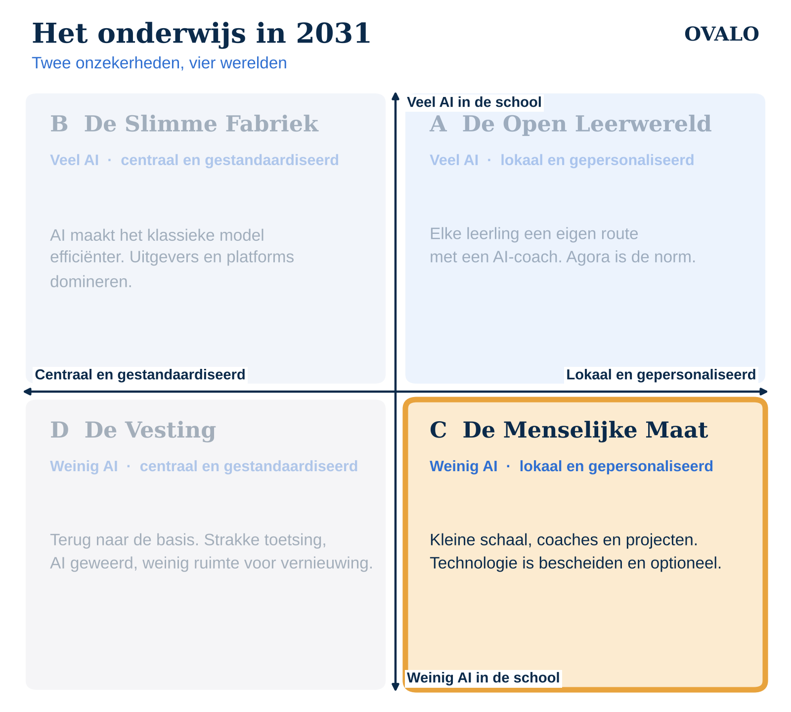

Dit is deel 4 van de reeks “Het onderwijs in 2031”. In het eerste artikel lees je hoe de vier scenario's tot stand komen. Dit scenario: weinig AI in de school, maar wel veel ruimte voor scholen en leerlingen om zelf te kiezen hoe er geleerd wordt.

Een maandagochtend in 2031
De leerlingen van coachgroep 3 zitten in een kring. Telefoons liggen in een bak bij de deur. Vandaag bezoeken ze een lokale boer voor hun project over voedsel. Morgen interviewen ze een wethouder. De laptop komt pas aan het einde van de week tevoorschijn, om het werk vast te leggen.
De coach kent elke leerling bij naam en verhaal. Ze heeft geen dashboard met tientallen grafieken nodig, wel een eenvoudig overzicht van welke leerdoelen iedereen al heeft laten zien.
Hoe ziet deze wereld eruit?
- Vernieuwing groeit, maar tech-light. Projectonderwijs, coaching en leren buiten de school zijn populair. Techniek is ondersteunend, nooit het middelpunt.
- Wantrouwen tegenover AI en schermen. Na jaren debat over schermtijd en AI kiezen veel scholen en ouders bewust voor minder.
- Kleinschaligheid wordt gewaardeerd. Ouders kiezen voor persoonlijke aandacht. Scholen organiseren zich in kleinere eenheden.
- Verantwoording blijft nodig. Ook zonder veel techniek moeten scholen kunnen laten zien wat leerlingen leren, aan ouders en inspectie.
Wat er te winnen valt
Dit scenario zet de relatie tussen leerling en coach centraal, en dat is waar veel leren begint. Leerlingen leren in de echte wereld, met echte mensen. Concentratie en welzijn kunnen verbeteren als schermen een kleinere rol spelen. En scholen houden zelf de regie over hun onderwijs.
Waar het mis kan gaan
- Kennis van technologie blijft achter. Leerlingen gaan straks werken in een wereld vol AI. Wie er op school nooit kritisch mee leert omgaan, staat later op achterstand.
- Werkdruk. Zonder slimme hulpmiddelen ligt alle administratie en differentiatie weer bij de coach.
- Bewijs verzamelen wordt lastig. Projectwerk op papier en in gesprekken is moeilijk te verantwoorden richting inspectie.
- Kleine budgetten. Kleinschalig onderwijs is kostbaar; er blijft weinig geld over voor iets extra's.
Wat kun je als school nu al doen?
- Kies technologie die zich terugtrekt. Goede tools zijn eenvoudig, snel en verdwijnen naar de achtergrond. Vraag je bij elke tool af of hij tijd geeft of tijd kost.
- Maak AI een keuze. Kies software waarin AI-functies per school of klas aan en uit kunnen.
- Leer kritisch over AI, ook zonder AI. Digitale geletterdheid kan ook zonder schermen: discussiëren, analyseren, onderzoeken wat AI wel en niet kan.
- Leg leren licht vast. Een eenvoudig overzicht van leerdoelen en bewijs is genoeg om te verantwoorden wat je doet.
Tot slot
De Menselijke Maat herinnert ons eraan dat onderwijs in de kern mensenwerk is. Technologie is daarin geen doel, maar soms wel een hulpmiddel om het overzicht te bewaren zonder dat het gesprek eronder lijdt. Dat is ook het uitgangspunt van LEO: overzicht van projecten en leerdoelen, zodat de coach tijd overhoudt voor de leerling.
Volgende week: De Vesting, waarin het onderwijs terugkeert naar de basis.